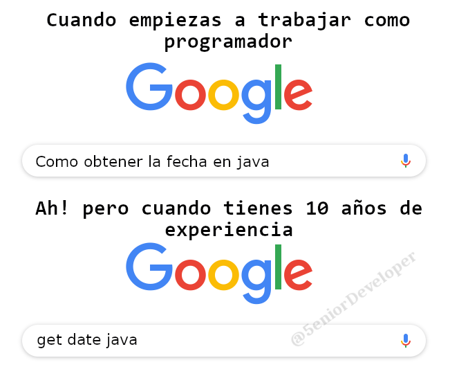

Es normal (y positivo) que, durante el desarrollo de la asignatura, surjan dudas y errores sobre el código y la ejecución. Cuando sea así, podéis y debéis preguntar tanto a vuestros compañeros como al equipo docente. en estos casos debemos usar el foro de la asignatura.
print funciona, pero usa depuración gráfica) #.
Identifica qué puede ir malTen en cuenta que cada pregunta requiere tiempo tuyo, de tus compañeros y de tus profesores. Y a nadie le sobra. Además, aunque sea cómodo y tentador preguntar sin haber hecho el trabajo primero, buscar e intentar encontrar la solución es el mejor camino para convertirse en un buen programador.
/
Saber qué buscar cuando se tiene un problema es más importante de lo que parece. Por ejemplo google tiene operadores para realizar búsquedas más precisas. Y normalmente se encuentran mejores resultados a problemas de programación con busquedas en inglés.
Pero, por supuesto, no tiene sentido buscar como locos durante una semana. Si, tras la búsqueda, no habéis encontrado nada, es el momento de hacer la pregunta.
Si habéis tenido un problema o una duda y habéis conseguido resolverla, evaluad si puede servir a otros compañeros y en ese caso compartid también vuestra experiencia.
Imaginad que llamáis al médico, y tenéis la siguiente conversación:
—Doctor, me encuentro mal.
—Bien, dígame, ¿cómo puedo ayudarle?
—No sé, no estoy bien. Intento estar bien, pero no lo consigo. Tengo
síntomas extraños. No estoy como me gustaría. ¿Qué me
pasa?
Puede parecer una broma, pero es posible que esto os suene más real:
—Profesor, mi práctica no funciona.
—Bien, dime, ¿cómo puedo ayudarte?
—No sé, no va bien. Intento que funcione, pero no lo consigo. Me da un
error extraño. No imprime lo mismo que dice el enunciado. ¿Qué
he hecho mal?
Aunque exagerándolo, y con un poco de humor, este tipo de descripciones es normal. Es imposible dar una respuesta con tan poca información.
Para tener una solución, hay que hacer un diagnóstico. Y, para tener un diagnóstico, hacen falta datos. Dado que estamos programando, vuestros datos son:
compilador --version,
versión del navegador, etc. - La salida por consola: intentad evitar
capturas de pantalla. Copiad y pegad texto. Usad pastebin. En el caso del navegador, sin
embargo, una captura puede ser útil.node init.js0.Hola a todos:
Estoy con la práctica 6 y tengo un error extrañísimo. El entrar en el menú de opciones y elegir “aplastar enemigo con alegría”, me dice que no se puede llamar a
undefined.Yo 1. arranco con
node init.js, 2. elijo “aplastar enemigo”, 3. elijo “aplastar con alegría”, y me sale el error que podéis ver en http://pastebin.com/s2n986aund.Mi código está en Github, en alumnofiera267/practica7, en el commit
a56afde34… (compartir enlace)Una captura de lo que me sale en el navegador está en https://imagebin.ca/v/32HTFG3qbe4k.
# node --version v4.6.1# chromium --version Chromium 54.0.2840.100¡Gracias!
En el foro del Campus Virtual. No se contestará a dudas técnicas en el correo electrónico.
Cualquier pregunta privada ocurre varias veces, todos los años. Si vuestra pregunta está en el foro, todos podrán beneficiarse de la solución, además de que otro compañero puede ayudaros y, a veces, con menos retraso que el equipo docente (estamos siempre atentos, pero no damos abasto muchas veces).
Sed descriptivos a la hora de crear un nuevo tema en el foro. Si bien el asunto debe ser corto, también debe resumir el tipo de problema. No creéis por ejemplo temas con el asunto “Error javascript”. Intentad especificar sobre qué es el error o la duda dando algo más de información, esto puede ayudar a otros compañeros a la hora de buscar si su problema ya ha sido compartido y resuelto. Completad el asunto por ejemplo con el mensaje de error si es informativo o la acción / llamada que os da problemas.
No tengáis miedo de compartir material. Mostrar el código y leer código de los demás es muy didáctico y facilita la colaboración. El valor no está en el uso que se le dé a vuestro código, lo que tiene valor es lo que aprendéis mientras lo escribís.
Como se comenta en varios lugares, copiar es ilegal, y supone suspender. Una cosa es compartir código e información (que siempre es positivo) y otra muy distinta usar las líneas de código de otro en nuestra práctica. Recordad: estáis cursando este grado y esta asignatura porque queréis aprender. Aquel para quien no sea así, y sólo quiera aprobar y pasar a lo siguiente, debería replantearse si está en el sitio apropiado.
Por lo demás, en la asignatura usamos software (muy efectivo) de control de copias. Copiar es siempre una mala idea.